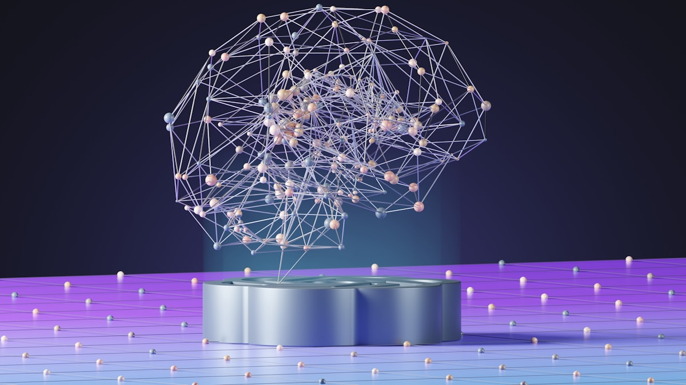
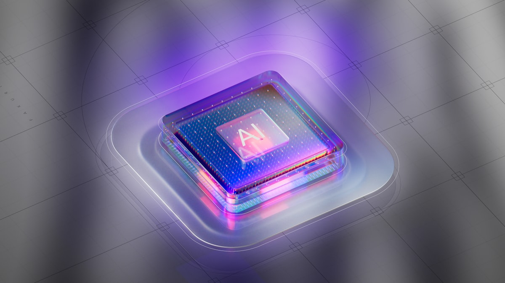
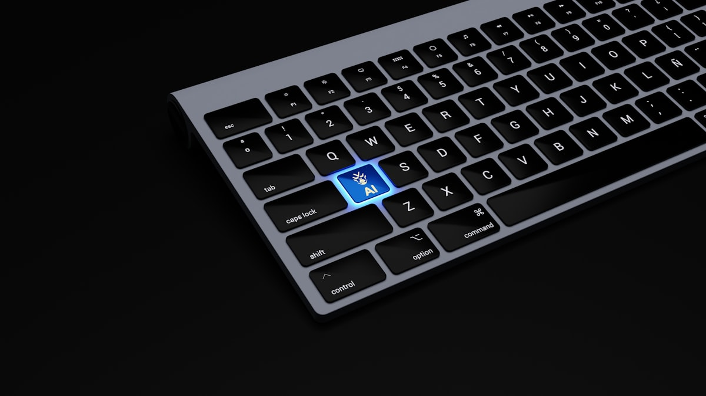
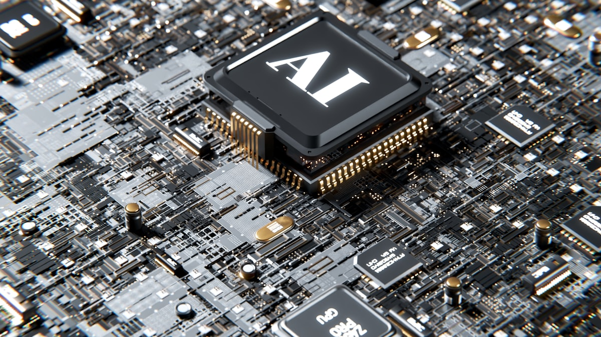

Önek Önbellekleme Ekonomisi: Cache Ne Zaman Kâra Geçer?
Prompt caching okuması 0,1x, yazması 1,25x. Başabaş noktası iki istek. Peki önbelleğiniz neden sessizce çalışmıyor? Asgari önek, 20 blok kuralı ve paralel tuzağı.
Oku
Spekülatif Kod Çözme: Aynı Modelden Nasıl Daha Hızlı Token Alınır?
Taslak model, EAGLE, MTP, n-gram ve suffix decoding. Kabul oranı neden tek gerçek metrik, vLLM'de nasıl yapılandırılır ve spekülasyonun işe yaramadığı durumlar.
Oku
Üretimde Kuantizasyon: FP8, NVFP4 ve Türkçe'de Kalite Kaybı
FP8, NVFP4, AWQ ve GPTQ arasında nasıl seçilir? Donanım uyumluluk matrisi, vLLM ile sunum ve düşük bitli kuantizasyonun Türkçe metinde ölçülmeyen kalite bedeli.
OkuBağlam Sıkıştırma mı, Sıfırlama mı? Uzun Ajan Oturumlarında Ne Yapmalı
Bağlam penceresi dolduğunda ne yapmalı? context editing, clear_tool_uses stratejisi, sunucu tarafı compaction ve bağlam sıfırlama arasında somut bir karar kuralı.
OkuPrompt Injection'ı Tasarımla Çözmek: CaMeL, Çift Model ve Yetenek Tabanlı Savunma
Daha iyi prompt yazarak prompt injection çözülmüyor. CaMeL, çift LLM deseni, yetenek tabanlı politika ve ölümcül üçlü ile modelin dışında uygulanan savunmalar.
OkuMCP Apps: Sohbetin İçinde Çalışan Arayüzler
MCP Apps uzantısı araç sonuçlarını etkileşimli arayüze çeviriyor. ui:// kaynakları, _meta.ui alanı, korumalı iframe ve postMessage protokolü çalışan kodla.
Oku
A2A: Ajanlar Birbiriyle Nasıl Konuşur? (MCP'nin Rakibi Değil, Tamamlayıcısı)
A2A v1.0 ajanlar arası keşif ve görev devrini standartlaştırıyor. Agent Card, görev yaşam döngüsü, MCP ile farkı ve ajan ticaretinin protokol katmanı.
OkuÇoklu Ajan Sistemleri: 15 Kat Token, %90 Kazanç — Hangisi Sizin Durumunuz?
Çoklu ajan mimarisi ne zaman kazanır, ne zaman para yakar? İki birincil kaynağın uzlaştırılması, token çarpanı, hata modları ve somut bir karar tablosu.
OkuKVKK ve LLM: Bir Kişisel Veriyi RAG İndeksinden ve Ağırlıklardan Nasıl Silersiniz?
Silme talebi geldiğinde veri altı yerde durur: kaynak, chunk, vektör, önbellek, günlük ve ağırlıklar. Her biri için uygulanabilir bir silme stratejisi ve kod.
Oku
llms.txt İşe Yarıyor mu? Verilerin Söylediği ve v2'nin Getirdikleri
137.210 alan adı üzerinde yapılan sunucu günlüğü çalışması llms.txt'nin okunmadığını gösteriyor. Google da kullanmadığını söylüyor. Peki v2 neyi değiştirdi?
OkuOpenTelemetry GenAI: Ajan İzlerini Standart Bir Şemayla Toplamak
gen_ai.* konvansiyonları hâlâ kararlı değil ama ajan izleme için tek standart bu. Span ağacı, operasyon adları, MCP trace yayılımı ve sürüm sabitleme.
Oku
Prompt Regresyon Testleri: Değerlendirmeyi CI'a Sokmak
Altın veri setini üretim günlüklerinden çıkarma, promptfoo ile CI kapısı kurma, LLM hakemi kalibre etme ve Türkçe metinde eşleştirmeyi bozan tuzaklar.
Oku
Düşünme Bütçesinden Çaba Seviyesine: Akıl Yürütmenin Faturası
Akıl yürüten modellerde gizli düşünme tokenları için ödersiniz. Çaba seviyeleri, görev bütçeleri, önbellek tuzağı ve daha fazla düşünmenin zarar verdiği durumlar.
Oku
Ajan İzolasyonu ve Yetkilendirme: Ölümcül Üçlüden Kaçınmak
Ölümcül üçlü, ikilik kuralı, araç izin matrisi, kapsayıcı izolasyonu, çıkış trafiği filtreleme ve KVKK'ya uygun denetim kaydı şeması — hepsi kodla.
OkuAjan Bellek Sistemleri: Bağlam Penceresi Dışında Ne Saklarsınız?
Ajan belleği nedir, nasıl kurulur? Epizodik/semantik/prosedürel ayrımı, pgvector şeması, Mem0-Zep-Letta karşılaştırması ve bellek zehirlenmesine karşı kontroller.
OkuAjan Koşum Mimarisi: Üretici-Değerlendirici Deseni ve Bağlam Kaygısı
Uzun süreli ajanlar neden yarım bırakır? Bağlam kaygısı, sıfırlamanın sıkıştırmayı yenmesi, üretici-değerlendirici ayrımı ve dosya üzerinden haberleşme.
OkuYapay Zekâ Ajanlarını Üretime Almak: Demo Çalışıyor, Peki Sistem?
Yapay zeka ajanı üretim ortamına nasıl alınır? Zaman aşımı, idempotency, devre kesici, sürümleme, kademeli dağıtım ve başarılı görev başına maliyet — kodla.
Oku
Kurumsal LLM Bütçesi: Token Vergisi, Kur Riski ve TL Cinsinden Gerçek Maliyet
Türkçe metnin token maliyetini ölçtük, üstüne kur riskini ve önbellek ekonomisini koyduk: API mi kendi sunucun mu sorusunun TL cinsinden çalışan cevabı.
OkuMCP Sunucu Güvenliği: Araç Açıklamasına Gizlenen Talimatlar
Araç zehirlenmesi, rug-pull yeniden tanımlama, confused deputy ve sunucular arası gölgeleme: MCP'ye özgü saldırılar ve çalışan bir tanım sabitleme kontrolü.
OkuOWASP Ajan Güvenliği İlk 10: ASI01'den ASI10'a Somut Karşılıklar
OWASP Agentic Top 10 (2026) listesinin her maddesini bir risk tanımı değil, uygulanabilir bir kontrole çeviriyoruz: yapılandırma, politika ve test karşılıkları.
OkuTürkçe Dil Modelleri 2026: Doğrulanmış Bir Manzara (ve Uydurulmuş Olanlar)
Türkçe açık kaynak LLM manzarası, her iddia için Hugging Face bağlantısıyla: Cosmos, Kumru, Trendyol, Kanarya, BİLGE. Var olmayan modelleri nasıl ayırt edersiniz?
Oku
1 Milyon Token Bağlam Varken RAG'a Hâlâ Gerek Var mı? (2026)
1 milyon tokenlık bağlam penceresi RAG'ı gereksiz kılıyor mu? Bağlam çürümesi, ölçülmüş Türkçe token maliyeti ve üçüncü bir seçenek: dosya sistemi üzerinden çalışmak.
Oku
Bilgisayar Kullanan Ajanlar: Demo ile Üretim Arasındaki 60 Puanlık Uçurum
Bilgisayar kullanan ajan nedir, nasıl çalışır? OSWorld 2.0'ın açığa çıkardığı %83,5–%20,6 uçurumu, eylem döngüsü, Türkçe arayüz tuzakları ve güvenlik modeli.
Oku
MCP 2026: Protokol Neden Durumsuz Hâle Geldi ve Sunucunuz Ne Yapmalı?
MCP'nin 2026-07-28 revizyonu oturumları, Mcp-Session-Id başlığını ve initialize el sıkışmasını kaldırdı. MRTR, server/discover ve göç planı somut örneklerle.
OkuBağlam Mühendisliği: Prompt Mühendisliğinin Yerini Alan Disiplin
Bağlam mühendisliği, sınırlı bağlam penceresine her adımda hangi tokenların gireceğine karar verme disiplinidir. Bağlam çürümesi, ortada kaybolma, budama ve özetleme stratejileri.
OkuOtonom Ajan Mimarileri: Planla-Uygula, Ajan Filoları ve Maliyet Gerçeği
Ajanlar tek bir döngüden ibaret değildir. ReAct, planla-uygula, denetçi-işçi desenleri, heterojen model kullanımı ve ajan filolarında maliyeti kontrol etmenin yolları.
OkuKüçük Dil Modelleri (SLM): Ne Zaman Büyük Modelden İyidir?
Küçük dil modelleri yüksek frekanslı, dar kapsamlı işlerde büyük modellerden daha uygun olabilir. Gecikme, maliyet, cihazda çalışma, ince ayar ve gerçekçi sınırlar.
OkuModel Yönlendirme ve Kademeleme: Her İşe Aynı Modeli Vermeyin
Yönlendirme, her isteği maliyeti ve yeteneği uygun modele göndermektir. Kademeli mimari, güven eşiği, kaçış yolu ve gerçek maliyet-kalite ölçümü.
OkuAkıl Yürüten Modeller ve Test Zamanı Hesaplama: Düşünmek İçin Zaman Satın Almak
Akıl yürüten modeller cevaptan önce düşünme adımları üretir. Test zamanı hesaplama, ne zaman kazandırır, ne zaman israftır ve gecikme ile maliyeti nasıl etkiler?
OkuMCP (Model Context Protocol): Yapay Zekâ Araçları İçin Ortak Dil
MCP, modellerin araçlara ve veri kaynaklarına standart bir arayüzle bağlanmasını sağlar. Sunucu-istemci modeli, N-kere-M problemi, güvenlik sınırları ve pratik kullanım.
OkuAjan Değerlendirmesi: Çok Adımlı Sistemleri Nasıl Ölçersiniz?
Bir ajanı değerlendirmek tek bir cevabı puanlamaktan farklıdır. Görev başarısı, adım kalitesi, araç seçimi, maliyet ve kırılganlık testleriyle ajan değerlendirme çerçevesi.
OkuGuardrails: Yapay Zekâ Çıktısını Üretimde Sınırlamak
Guardrails, modelin girdi ve çıktısını kurallarla sınırlayan katmandır. Girdi filtreleri, şema doğrulama, çıktı denetimi, gerçeklik kontrolü ve yanlış pozitif dengesi.
OkuGEO: Üretken Arama Motorlarında Kaynak Gösterilmek
Üretken arama motorları cevabı doğrudan veriyor; tıklama yerine atıf önem kazanıyor. İçeriği ChatGPT, Perplexity ve AI Overviews tarafından alıntılanacak biçimde yapılandırmanın pratik yolları.
OkuHukukta Yapay Zekâ: Neden Kaynak Göstermeyen Sistem İşe Yaramaz
Hukuk alanında yapay zeka, doğruluğun denetlenebilir olmasını gerektirir. İçtihat araması, kaynağa dayandırma, atıf zorunluluğu, gizlilik ve nihai sorumluluğun neden avukatta kaldığı.
OkuÇok Modlu (Multimodal) Modeller: Görüntü, Metin ve Sesi Birlikte İşleyen Yapay Zekâ Nasıl Çalışır?
Çok modlu modeller görüntü, metin ve sesi tek bir sistemde nasıl birleştirir? Vision-language modelleri, ortak embedding uzayını ve gerçek kullanım örneklerini sezgisel benzetmeler ve kısa kodla anlatıyoruz.
OkuDifüzyon Modelleri ve Görüntü Üretimi: Gürültüden Görüntüye
Difüzyon modelleri görüntüyü nasıl üretir? İleri ve geri süreç, gürültüden görüntüye giden yol ve Stable Diffusion'ın latent alanı, günlük analojilerle sezgisel ve doğru biçimde anlatılıyor.
OkuModel Damıtma ve Küçük Modeller: Büyük Öğretmenden Küçük Öğrenciye Bilgi Aktarımı
Model damıtma (knowledge distillation), büyük bir öğretmen modelin bilgisini küçük ve hızlı bir öğrenci modele aktarır. Yumuşak etiketleri, sıcaklığı ve damıtma kaybını; bunun neden, nasıl ve ne zaman işe yaradığını sezgisel örneklerle anlatıyoruz.
OkuLoRA ve Verimli İnce Ayar (PEFT): Tüm Modeli Eğitmeden Uyarlama
LoRA ve PEFT'i sezgisel olarak anlatıyoruz: tüm modeli eğitmeden, düşük ranklı küçük adaptörlerle uyarlama, bellek/maliyet avantajı ve pratik kullanım ipuçları.
OkuPrompt Injection ve Jailbreak: Yapay Zeka Güvenliğinin Temelleri
Prompt injection ve jailbreak nedir, nasıl çalışır? RAG ve ajan sistemlerindeki riskleri ve katmanlı savunma yöntemlerini sade analojilerle anlatıyoruz.
OkuFonksiyon Çağırma ve Yapılandırılmış Çıktı: Modeli Güvenilir Bir Bileşene Dönüştürmek
Fonksiyon çağırma ve yapılandırılmış çıktı, dil modelini serbest metin üreten bir sohbetçiden sistemlerinize güvenle bağlanan bir bileşene dönüştürür. JSON üretimi, şema zorlama ve sağlam entegrasyon pratiklerini sezgisel örneklerle anlatıyoruz.
OkuLLM Maliyet Optimizasyonu: Token, Önbellekleme, Model Seçimi ve RAG ile Faturayı Düşürmek
LLM faturasını düşürmenin pratik kaldıraçları: token tüketimini azaltma, prompt caching, görevi modele eşleştirme, toplu işleme (batch) ve küçük model + RAG dengesi. Sezgisel analojiler ve örnek kodla, doğru sırayla maliyet optimizasyonu.
OkuRLHF ve Model Hizalama: Yardımsever ve Güvenli Modeller, Ödül Modeli ve DPO
Bir modeli neden ve nasıl "yardımsever ve güvenli" hale getiririz? RLHF'in üç adımını, ödül modelini ve daha sade alternatif DPO'yu günlük analojilerle anlatıyoruz.
OkuLLM Gözlemlenebilirliği: İzleme, Loglama ve Değerlendirme Döngülerine Pratik Bir Bakış
LLM tabanlı ürünlerde gözlemlenebilirliği ele alıyoruz: izleme (tracing), loglama, değerlendirme döngüleri ile üretimde kaliteyi koruma ve regresyonları erken yakalama.
OkuYapay Zeka Ürünlerinde Kullanıcı Deneyimi (AI UX): Belirsizlikten Güvene
Yapay zeka ürünlerinde kullanıcı deneyimi nasıl tasarlanır? Belirsizliği yönetmek, kaynak gösterme, geri bildirim, hatada zarafet ve güven inşası için pratik rehber.
OkuBüyük Dil Modelleri (LLM) Nasıl Çalışır? Transformer Mimarisinin Sezgisel Anlatımı
LLM'ler nasıl çalışır? Bir sonraki kelimeyi tahmin etme, dikkat (attention) ve katmanlar üzerinden Transformer mimarisini sezgisel, teknik ama anlaşılır anlatıyoruz.
OkuToken ve Embedding: Bir Dil Modeli Metni Nasıl "Görür"?
Tokenizasyon, kelime parçaları ve embedding vektörleri sezgisel anlatımla: metnin anlamı bir dil modelinin içinde nasıl sayıya ve koordinata dönüşür?
OkuRAG Nedir ve Uçtan Uca Nasıl Kurulur? Pratik Bir Mimari Rehber
RAG nedir, nasıl çalışır? Belge, chunk, embedding, vektör arama ve bağlamla üretim adımlarını küçük kod örnekleriyle uçtan uca anlatan pratik mimari rehber.
OkuVektör Veritabanları Rehberi: Benzerlik Araması, HNSW ve FAISS / pgvector / Qdrant Karşılaştırması
Vektör veritabanlarını sezgisel anlatan rehber: benzerlik araması, ANN ve HNSW algoritması, FAISS, pgvector ile Qdrant karşılaştırması ve ne zaman hangisini seçmelisiniz.
OkuPrompt Mühendisliği: Pratik Teknikler ve Gerçek Örnekler
Açık talimat, few-shot, adım adım düşündürme, rol verme ve çıktı biçimlendirme: dil modellerinden daha iyi sonuç almanın pratik tekniklerini örneklerle anlatıyoruz.
OkuFine-tuning mi, RAG mi, Prompt mu? Hangisini Ne Zaman Kullanmalı
Fine-tuning, RAG ve prompt yaklaşımlarını maliyet, güncellik ve doğruluk açısından karşılaştırıyoruz. Hangisini ne zaman seçmeli? Pratik karar tablosu içerir.
OkuLLM Halüsinasyonları: Neden Olur ve Nasıl Azaltılır?
LLM halüsinasyonu neden olur ve nasıl azaltılır? Kaynağa demirleme (grounding), RAG, doğrulama, kendini kontrol ve temperature ayarıyla pratik önlemler.
OkuAçık Kaynak LLM'ler: Llama, Mistral, Qwen ve Gemma'ya Pratik Bir Bakış
Llama, Mistral, Qwen ve Gemma gibi açık kaynak LLM'leri kapalı modellerle karşılaştırıyoruz: gizlilik, maliyet, ince ayar özgürlüğü ve ne zaman tercih edilir.
OkuLLM'leri Nasıl Değerlendiririz? Otomatik Ölçütler, LLM-as-Judge ve RAG Sadakati
LLM değerlendirmesi rehberi: otomatik ölçütler, LLM-as-judge, insan değerlendirmesi, alan-özel test setleri ve RAG için sadakat (faithfulness) ölçümü.
OkuBir Yapay Zeka Modelini Üretime Almak (MLOps): Demodan Gerçek Ürüne
MLOps nedir? Yapay zeka modelini üretime almanın yolu: sürümleme, izleme, gecikme/maliyet, geri bildirim döngüsü ve güvenli dağıtımı sade bir dille anlatıyoruz.
OkuTarık Şenkal kimdir?
Kurucunun kısa hikâyesi.
OkuHatsonTech nasıl ortaya çıktı?
HatsonTech basit bir soruyla nasıl başladı ve neden kendi ürünlerini geliştiriyor.
Oku